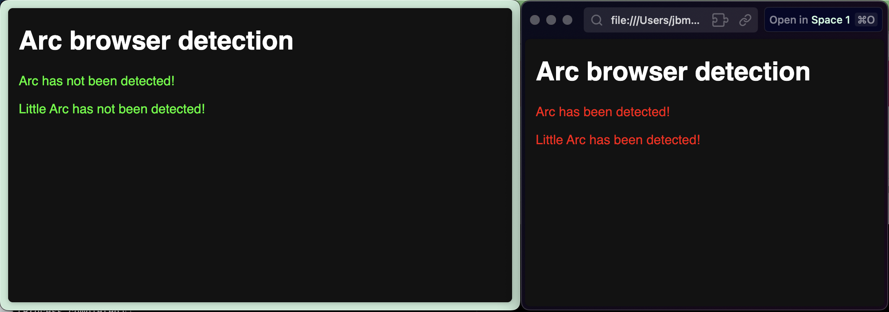

Arc has a setting under Advanced > Allow website to get your theme data. This setting is on by default.
However, in certain Arc versions, your setting is not respected in Little Arc windows, and in this case Little Arc's theme data will always be shared.

This is likely a bug - I've reported it to The Browser Company. In the meantime, this extension will remove the data directly after it is added.
Once you've downloaded the extension, visit arc://extensions. Enable Developer mode in the top-right corner, then drag and drop the arc-colors.crx file onto the Arc window.
That's it! My Arc detection PoC should no longer work, and no theme data should appear on Arc's color palette testing website.